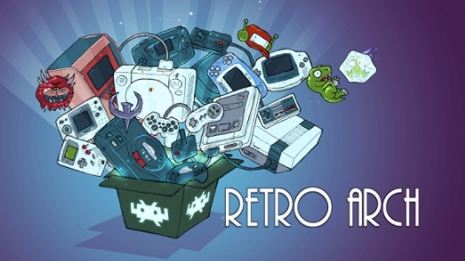

Latest RetroArch BIOS Pack
Unlock the full potential of your retro gaming experience! Download our latest complete RetroArch BIOS pack now by clicking the button below.
Download For Free
Unlock the full potential of your retro gaming experience! Download our latest complete RetroArch BIOS pack now by clicking the button below.
Download For FreeIn the realm of retro gaming emulation, where enthusiasts delve into the nostalgia of classic consoles, one name stands out prominently: Retroarch. As a versatile emulator frontend, Retroarch offers a unified interface for running various retro game emulators, providing a streamlined experience for gamers eager to relive the glory days of gaming. However, to unlock the full potential of Retroarch, one crucial element is often overlooked: the BIOS pack. In this article, we'll explore what the Retroarch BIOS pack is, why it's essential, and how it enhances the retro gaming experience.
Before delving into the BIOS pack, let's first understand Retroarch itself. Retroarch is an open-source frontend for emulators, allowing users to run games from a multitude of retro gaming consoles and platforms. Developed with a focus on cross-platform compatibility, Retroarch supports various operating systems, including Windows, macOS, Linux, Android, iOS, and more.
One of Retroarch's key features is its ability to consolidate multiple emulators under one roof through its unified interface. Instead of dealing with separate emulator programs for different consoles, users can access all their favorite retro games from one central hub, making navigation and organization a breeze.
In the world of emulation, BIOS (Basic Input/Output System) files play a crucial role. A BIOS file contains firmware necessary for the emulation of specific hardware components of a console. Without the appropriate BIOS files, many emulators won't function correctly, leading to issues such as games failing to load or experiencing graphical glitches.
Each retro gaming console has its BIOS, and obtaining these files legally can be a challenge due to copyright restrictions. However, Retroarch's BIOS pack provides a convenient solution by bundling together the necessary BIOS files for numerous consoles, ensuring users have what they need to emulate their favorite games without legal or technical hurdles./p>
The Retroarch BIOS pack is a collection of BIOS files curated specifically for use with the Retroarch emulator frontend. This pack includes BIOS files for various consoles, such as the PlayStation 1, Sega Genesis, Nintendo Game Boy Advance, and many others. By downloading and installing the Retroarch BIOS pack, users can ensure they have the necessary firmware to run their favorite retro games smoothly.
Installing the Retroarch BIOS pack is a straightforward process:

The Retroarch BIOS pack serves as a vital component in the emulation ecosystem, providing users with the necessary firmware to run retro games seamlessly. By offering a convenient and legal solution for obtaining BIOS files, Retroarch simplifies the retro gaming experience, allowing enthusiasts to indulge in nostalgia without the hassle of navigating complex legalities or technical configurations. Whether you're a seasoned retro gamer or a newcomer exploring the classics for the first time, the Retroarch BIOS pack is an essential tool for unlocking the full potential of retro gaming emulation.